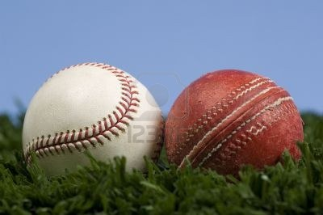
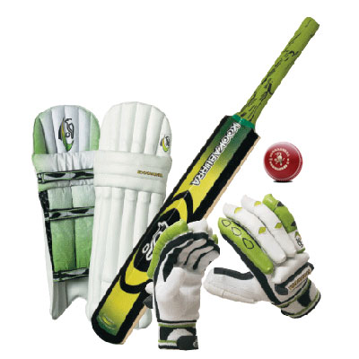

Cenni storici...
Cenni storici...
|  |
| Il baseball è uno sport di squadra in cui due squadre composte da 9 giocatori si scontrano per 9 inning, nove riprese in cui le due squadre si alternano nella fase di attacco e di difesa. Il cricket è uno sport di squadra giocato fra due gruppi di undici giocatori ciascuno. È nato, almeno nella sua forma moderna, in Inghilterra ed è praticato principalmente nei paesi del Commonwealth. |
|
Cenni storici...
|
|  Cenni storici... |
| Simone Viagi per "CFP Galdus". Informazioni tratte da Wikipedia. |